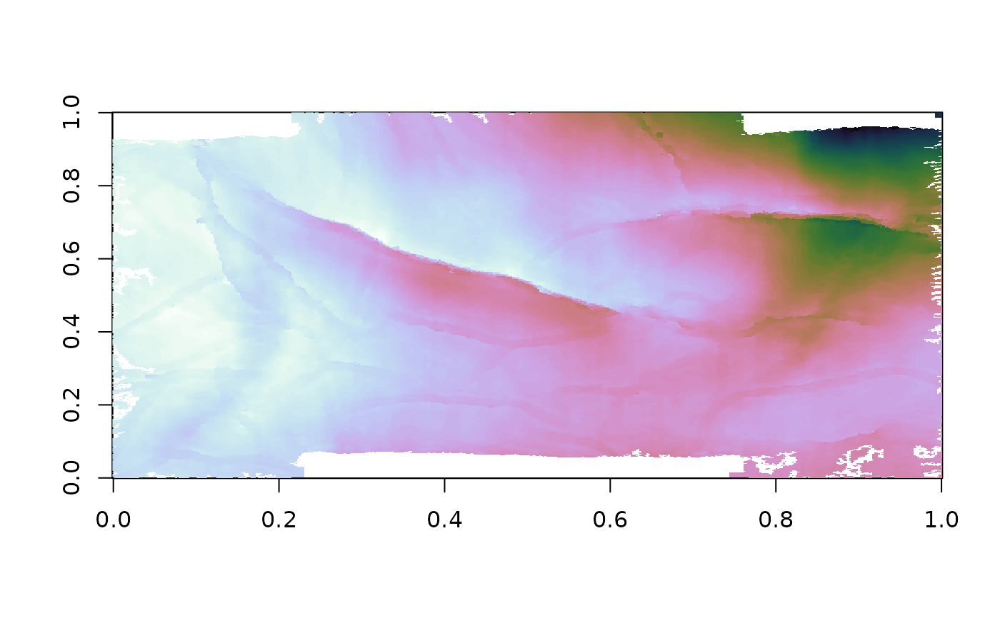
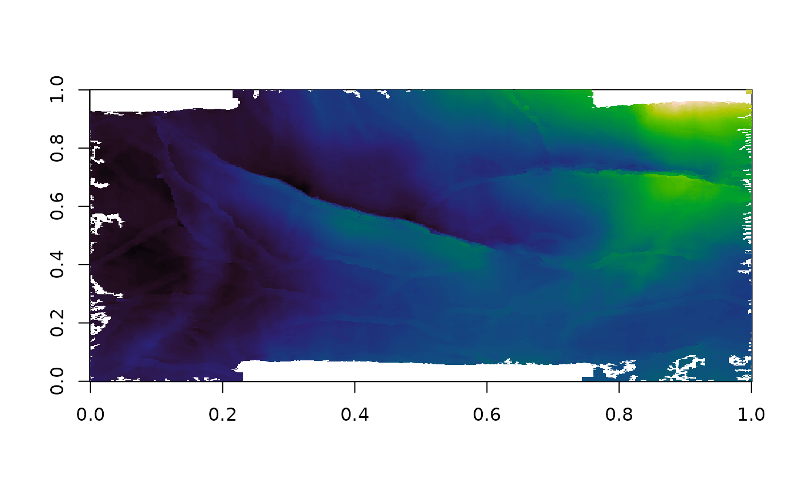

Seismic data offsore of Nova Scotia in Canada. The data have some subtle structures that are interesting for comparing colormaps. Full details can be found at https://www.opendtect.org/osr/Main/PENOBSCOT3DSABLEISLAND License CC-BY.
Usage
data(penobscot)Source
https://github.com/agilescientific/notebooks https://github.com/agilescientific/notebooks/blob/master/Filtering_horizons.ipynb
Examples
#
library(pals)
data(penobscot)
# Hall used cubehelix palette
# http://wiki.seg.org/wiki/Smoothing_surfaces_and_attributes#External_links
image(penobscot, col=rev(cubehelix(99)))

# Niccoli suggested LinearL palette
# http://wiki.seg.org/wiki/How_to_evaluate_and_compare_color_maps
image(penobscot, col=linearl(99))

# Use this version to get a colorkey
# library(lattice)
# levelplot(penobscot, col.regions=rev(cubehelix(99)),
# cuts=97, asp=0.7, scale=list(draw=FALSE))